Evolving the design system at m10
I joined the m10 team during the move to a new design system. New in every sense: a new library in Figma, updated components, tokens, and rules that were meant to bring the interfaces in line with a unified brand style.
The move wasn’t finished yet. Designers worked with two libraries at once—the old one and the new one—mixed their components, and often resorted to detach when components lacked the settings they needed. The frontend also had old and new components side by side, but it wasn’t always clear what was already implemented in code and what wasn’t.
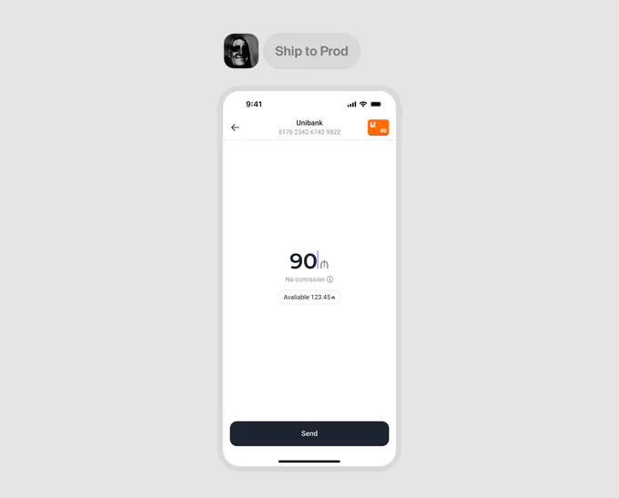
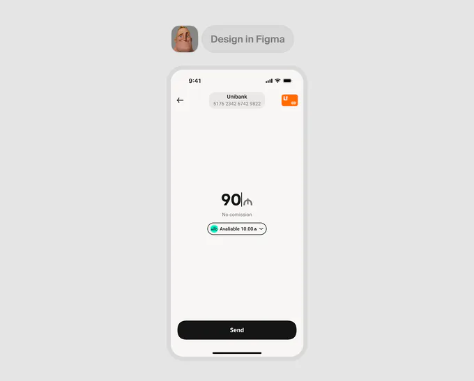
My role
I took on the further development of the DS alongside my product tasks. The goal wasn’t just to extend the library, but to help the team move to it completely in Figma, while developers gradually brought the new UI into the app.
01 / Design system audit
First, I audited the old and new libraries, reviewed the app’s UI, and collected designers’ requests. I needed to understand which components were missing, which ones should be migrated or updated, and what kept designers from using the existing ones without detach.
Separately, I met with the frontend team to compare the Figma library with the code. It turned out that some of the new components were already in the shared UI kit, some were used in the product but hadn’t made it into the developers’ library yet, and the rest were waiting to be implemented.
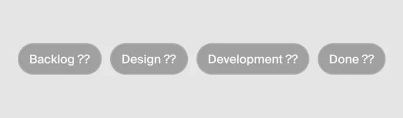
After the audit, I put together a backlog and set up statuses right in Figma:
- Ready in design and code
- Ready in design, waiting for development
- In progress with designers
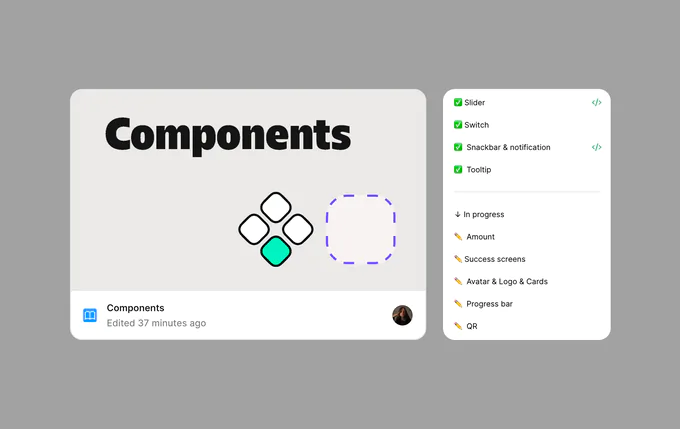
Now the library showed not only which components existed, but also what stage each of them was at.
Along the way, I cleaned up the file structure and introduced basic rules for organizing it. No extensive documentation—at this stage, it was more important to make the library clear and convenient for everyday work.
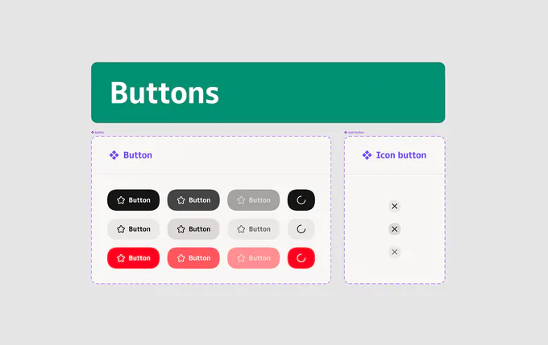
We agreed to build new flows only with the new DS. As the components improved, the need to go back to the old library disappeared, and the team dropped it completely.
02 / That pesky detach
One of the most common problems designers pointed out was detach. Sometimes a component existed but couldn’t be configured for the task at hand. Designers had to detach it from the library and lose all future updates along with it.
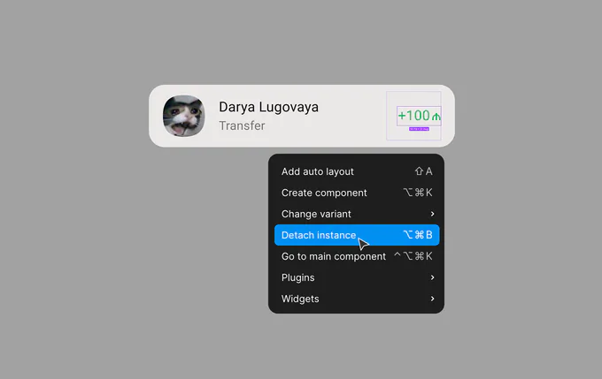
Based on the audit, I added missing components, variants, and states. But it was just as important to rethink the structure of the ones the team already used every day.
When slots came to Figma, I started trying them in components that designers often had to detach. At the same time, it was important not to turn every element into a free-for-all builder with no rules.
A good example is list cells. Previously, to add a non-standard provider logo or an action on the right, you had to detach the cell from the library . With slots, you can replace just the part you need without touching the rest of the structure.
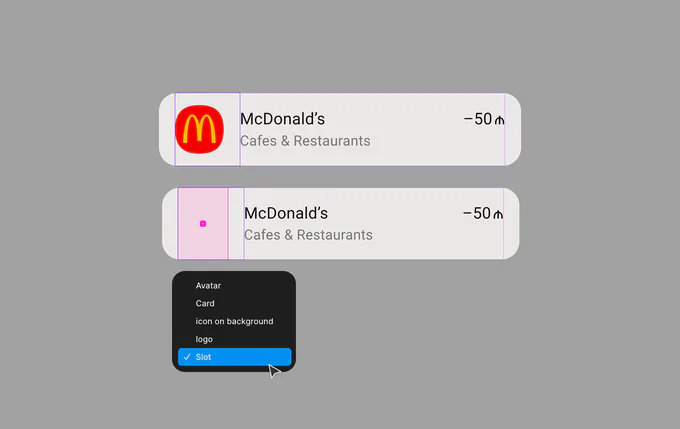
In the same way, I improved the bottom sheet: its content can be adapted to a specific scenario while the base of the component stays intact.
This gave us more flexibility without having to build our own version of an element every time.
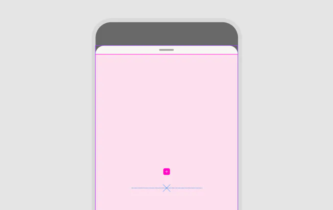
03 / If a screen repeats, it needs a template too
The consistency problem wasn’t limited to individual components.
For example, the app had several visually different versions of the same error screen. Each designer built it from scratch: the spacing changed here, the illustration position there, and sometimes the whole layout.
We started adding templates of recurring pages to the library—errors and empty states first.
We set these pages up as components. Slots let you change illustrations and content, while the layout stays shared across all flows.
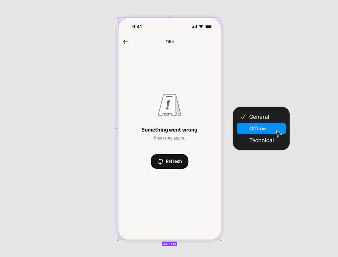
For a similar reason, we turned the app’s home screen into a component too. It often appears in product flows as an entry point, so it’s easier to update it in one place than to maintain dozens of separate copies.
This turned out to be another way to reduce inconsistencies in mockups without introducing extra rules that everyone has to remember.
04 / Figma → Development
Bringing order to the design library was only half the job. Components also had to be available to developers ; otherwise the move to the new UI would keep stalling.
We brought back syncs with the frontend team every two weeks. We checked progress, discussed priorities, and decided which components could be picked up next.
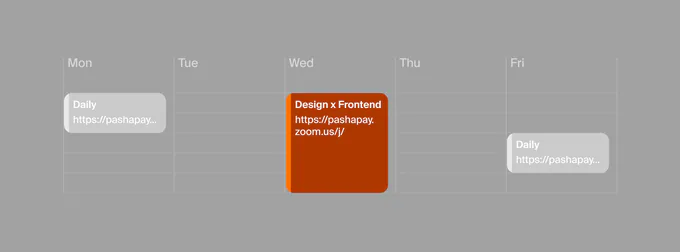
I also gathered DS tasks in Jira , so the team had a shared backlog and transparent implementation statuses.
In parallel, we started updating the web version of the UI kit, where developers can browse the available components and check how they behave.
We paid special attention to design review . The process existed before, but small components were sometimes skipped: it seemed there was nothing to check in a simple button or icon.
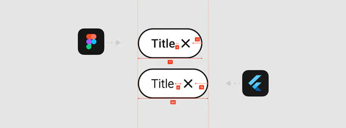
In practice, these were exactly the details where mismatches with the mockups appeared—text sizes , spacing, strokes, alignment. We agreed to hold a design review before merging every new component, so issues get fixed before release, not after.
05 / There are never enough resources
Even when components are ready both in Figma and in code, it doesn’t mean the whole product immediately switches to the new UI .
The team didn’t have the resources to redo all the existing screens as a separate effort. So we kept the transition gradual: when working on a product task, developers update the related interface elements whenever possible.
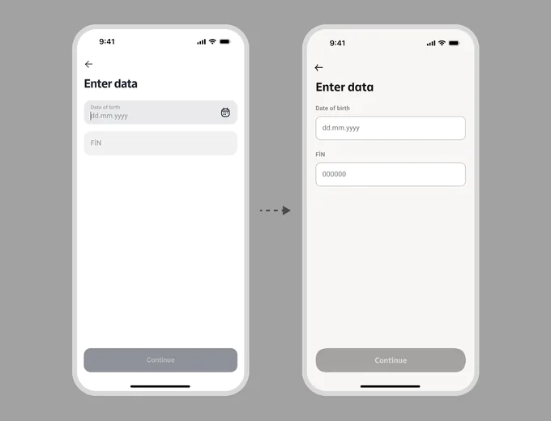
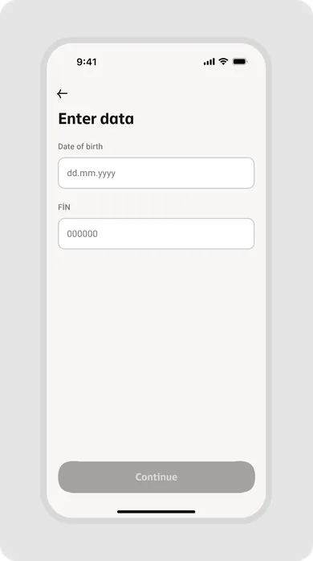
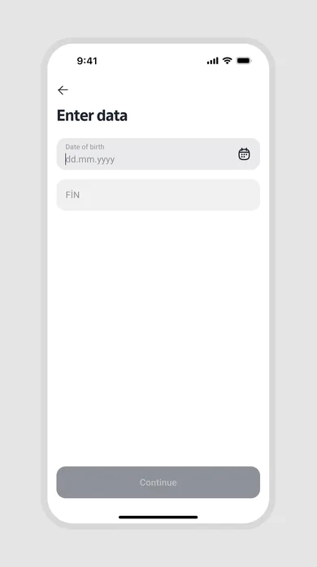
This is where the ready-made UI kit helps. Instead of implementing an updated component from scratch each time, developers can take it from the shared library.
This way, the new DS gradually makes its way into the app without a separate large migration project.
Results
The design team has fully switched to the new library. It covers the core use cases, and components have become more flexible thanks to new variants, states, and slots.
There’s less detach in product flows. Templates for recurring pages helped remove visual inconsistencies between identical states.
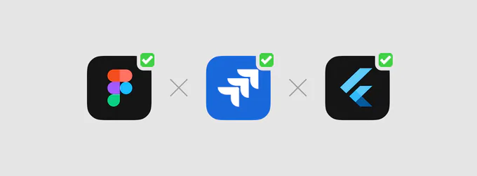
About 90% of the Figma components are already available in the developers’ shared UI kit. This doesn’t mean the whole app interface has been updated: the move to the new UI in production is still ongoing.
Both teams now have clear readiness statuses, a shared backlog , and a regular sync process. And design review helps keep small visual bugs out of production.
Conclusion
The design system is still evolving. We still need to expand the documentation and keep updating the app. But now it’s a working system the team can rely on—not yet another place where you constantly have to figure out what’s ready, what to use, and where to find the right component.